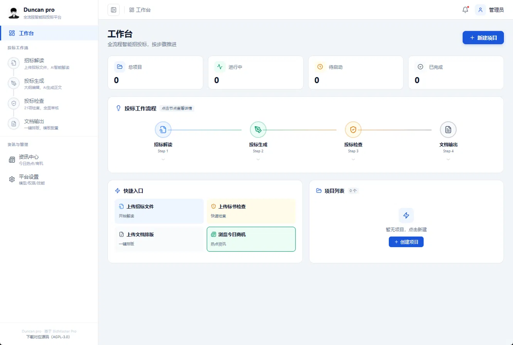
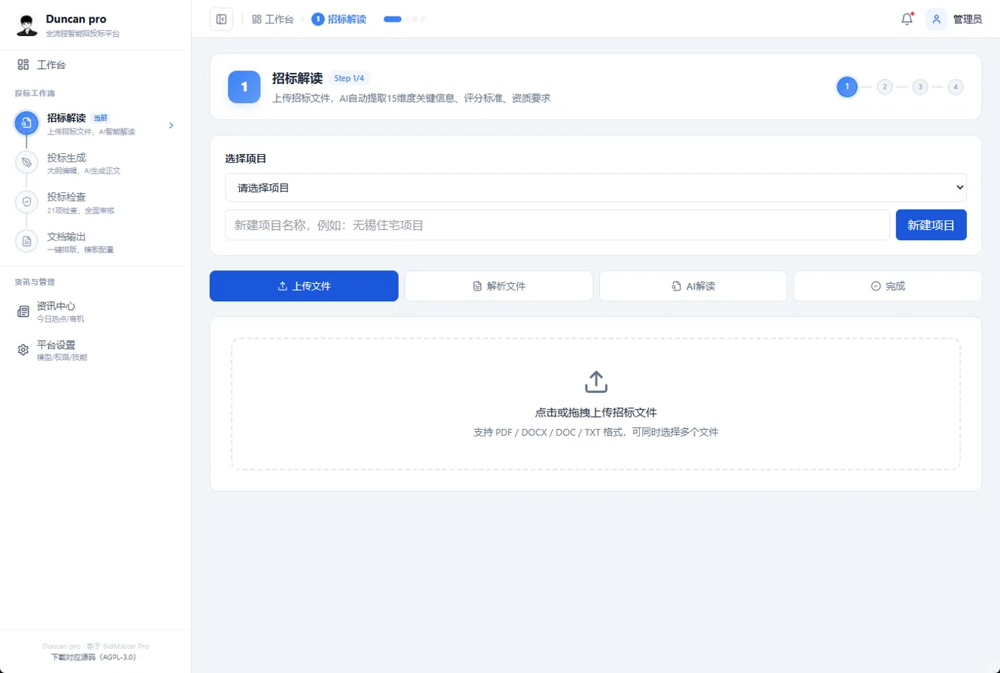
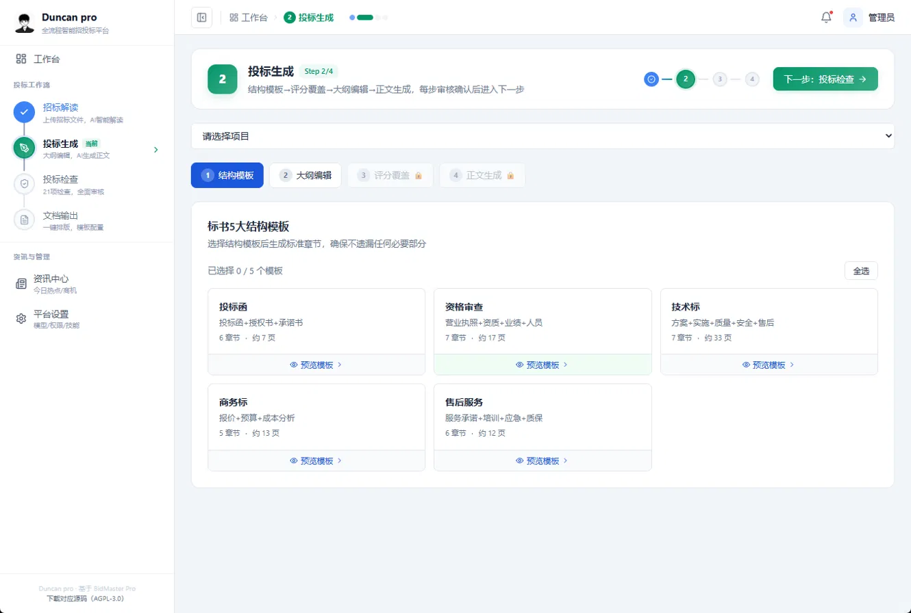
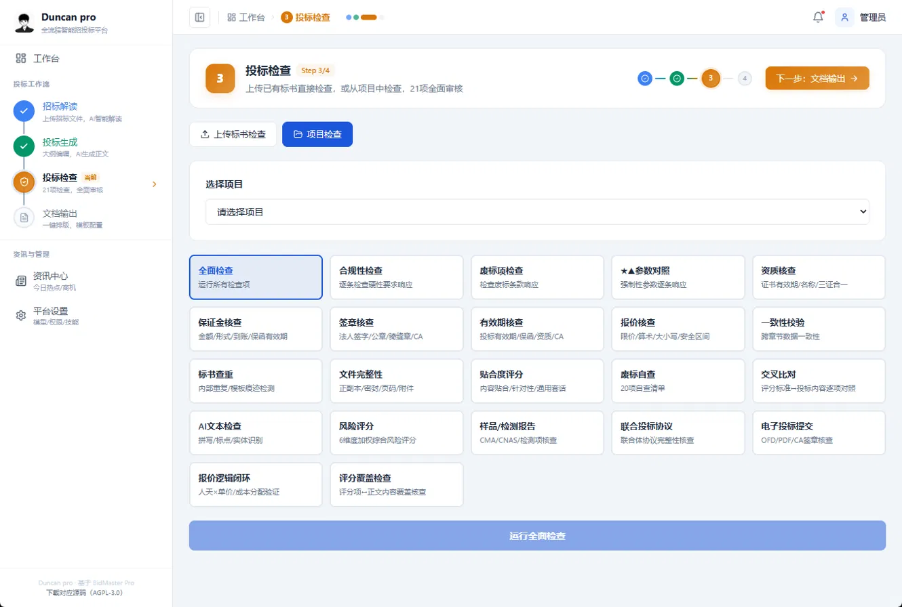
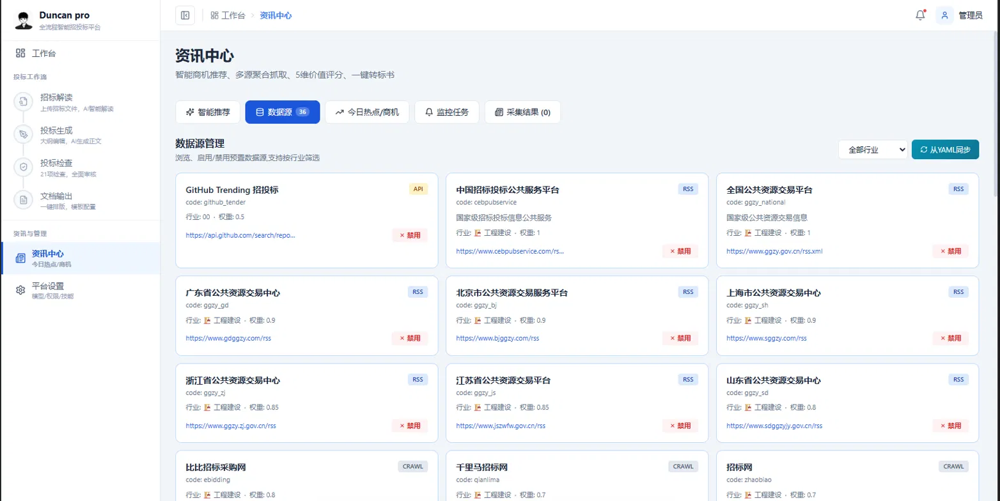

在线体验 Demo可点击浏览完整导航与预置样例；不会上传文件、保存数据或实时调用 AI。
OVERVIEW / 工作台
把复杂招标文件，整理成可阅读的清单
从真实公开文件出发，看看 Duncan pro 如何呈现项目、资格、评分与风险信息。
01 / SAMPLE PROJECT
公开资料预置演示项目
澄地
2026-C-4无锡 · 房地产开发项目
2026-C-4无锡 · 房地产开发项目
澄地2026-C-4号地块商品房开发项目
勘察、方案、初步设计招标文件提前公示稿。示例结果由本机真实解读流程生成，本页仅回放节选。
02 / WORKFLOW
四步了解解读流程
- 01上传招标文件
真实平台接收文件；这里展示已上传的公开样例。
- 02解析文字
样例 PDF 已在本机提取 55,260 个字符。
- 03AI 分主题解读
样例曾完成 15 个主题的 DeepSeek 分析。
- 04人工核对与报告
金额、日期和资格要求须回查原文后再使用。
这个在线版本用于随时展示。真实文件分析需要自行部署后台并配置模型密钥。
01 / 招标解读
查看原始来源 ↗跟着公开样例走一遍
点击步骤查看已完成的结果；这里没有实时处理，也不需要登录。
已准备的公开文件
澄地2026-C-4号地块商品房开发项目
勘察、方案、初步设计招标文件提前公示稿。它不是正在招标的有效公告，仅用于演示文件解读。
无锡澄地2026-C-4号地块商品房开发项目-招标文件.pdf89 页 · 无锡公共资源交易中心公开资料
已准备文字提取 / 已完成
89 页文件，提取 55,260 个字符
这份样例含可读取的文字层，因此能够进入后续分析。扫描图片类文件目前不在这个演示的已验收范围内。
89PDF 页数
55,260提取字符
15分析主题
DeepSeek 分析 / 结果节选
样例已完成把关键内容放到一起看
以下文字来自本机对公开文件的解读结果，选取少量字段展示。正式使用时请回到原文件确认。
报告提取最高限价为 582.12 万元；文件中的建安投资约 40,000 万元，两者含义不同。
报告识别设计甲级及岩土工程勘察甲级等可选资质组合，需按原文件条款逐项核对。
报告列出报价、技术方案、项目管理机构等评分部分。
超限报价、暗标出现可识别投标人身份的信息，均被报告列为重点核查项。
解读是辅助阅读，不能替代投标复核。
02 / 投标生成
模板交互演示按章节组织投标内容
这里展示原平台的结构模板和编辑流程示意；不生成真实投标正文。
当前演示项目澄地2026-C-4号地块商品房开发项目 · 勘察、方案、初步设计
结构模板
只切换示例内容选择一个章节类型
原平台提供投标函、资格审查、技术标、商务标、售后服务等结构模板。点击卡片查看对应的目录示意。
目录示意 / 不含生成正文
投标函
可先确定目录与责任人，再对照招标文件逐条填写。
- 投标函
- 法定代表人身份证明
- 授权委托书
- 投标承诺书
AI 生成正文、在线编辑与保存需要部署后台。这里的目录仅用于展示产品流程。
03 / 投标检查
规则目录演示先看清楚需要核查什么
展示原平台的检查分类及示例规则；此页没有读取投标书，也没有运行合规审核。
检查对象当前没有上传投标书；以下结果均为待核查状态。
设计、勘察资质及证书有效期。
注册证书、业绩和人员要求。
核对投标报价是否超过文件上限。
金额、形式、到账与有效期。
签署位置、公章与电子签章。
核对匿名规则和身份标识。
截图中的“21 项检查”属于原平台界面说明。这个静态 Demo 只展示部分规则目录，不能给出通过或不通过结论。
04 / 文档输出
下载样例报告 ↓把结果整理成可带走的报告
这里提供真实样例的报告节选。正式投标书排版依赖完整正文和后台服务。
原平台能力
标书排版与模板配置
本地平台有文档输出页面；静态演示只提供解读样例报告，不展示虚构的投标书生成结果。
Duncan pro招标文件解读报告公开样例 · 节选版
资讯与管理
静态来源目录资讯中心
这里说明原平台的资讯入口；在线静态 Demo 不抓取实时公告或推荐商机。
公开信息来源
从官方公告开始查找项目
以下是可自行访问的公开来源链接，不代表平台已接入实时采集。
本次预置文件
澄地2026-C-4号地块商品房开发项目
已预先完成 PDF 文字提取与解读。点击进入招标解读，可以看到项目样例。
资讯与管理
只读演示平台设置
在线 Demo 为免登录的只读展示，设置不会写入设备或服务器。
运行方式
静态托管
GitHub Pages 提供此公开演示网页。访问者无需安装 Docker；你自己的电脑也无需保持开机。
当前：在线演示模型配置
DeepSeek API
本地完整版可由管理员在后台配置模型密钥。在线 Demo 不接收密钥、不发起模型请求。
当前：未连接数据与权限
只读样例
网页不提供真实账户、上传或保存。正式使用需要独立部署后台、数据库和访问控制。
当前：无访客数据02 / 样例报告
下载 HTML 报告 ↓让解读结果可读、可带走
根据公开 PDF 的真实分析结果整理的精简样例；关键结论仍需人工核对。
解读报告 / EXCERPT公开样例 · 2026
澄地2026-C-4号地块商品房开发项目
勘察、方案、初步设计 · 招标文件提前公示稿
项目概况建筑面积约 69,672.7 平方米；建安投资约 40,000 万元。
最高限价报告提取勘察设计收费最高限价 582.12 万元。
资格审查重点核查设计与勘察资质、项目负责人注册证书等要求。
投标风险重点核查报价限价、暗标要求、保证金与联合体条件。
03 / 界面预览
看看真实平台的页面
以下截图来自 Duncan pro 网页。截图中的按钮只展示原平台界面；在线 Demo 体验请从工作台进入。




